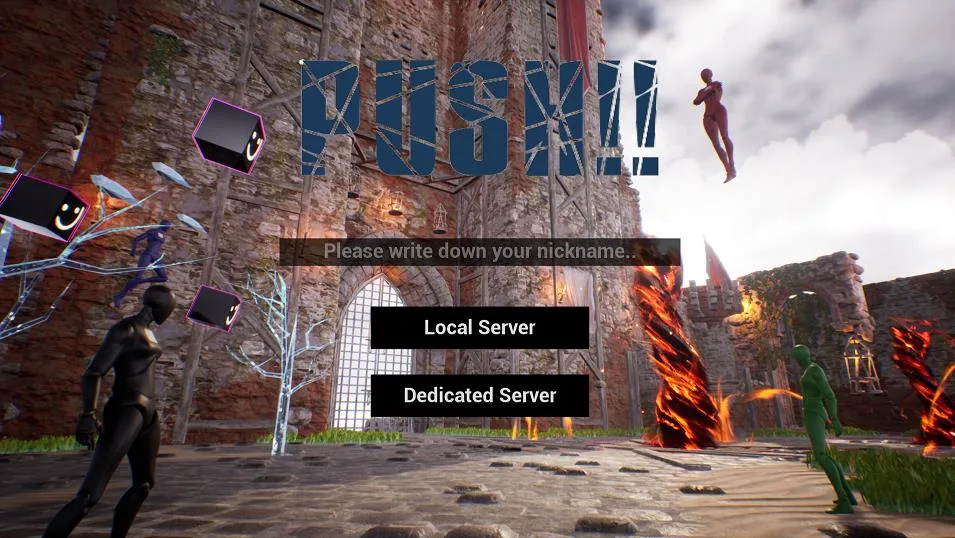
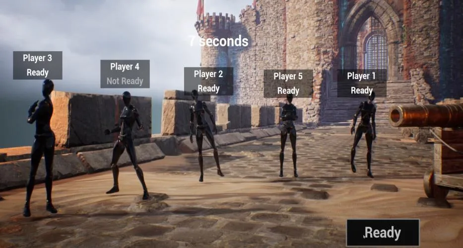
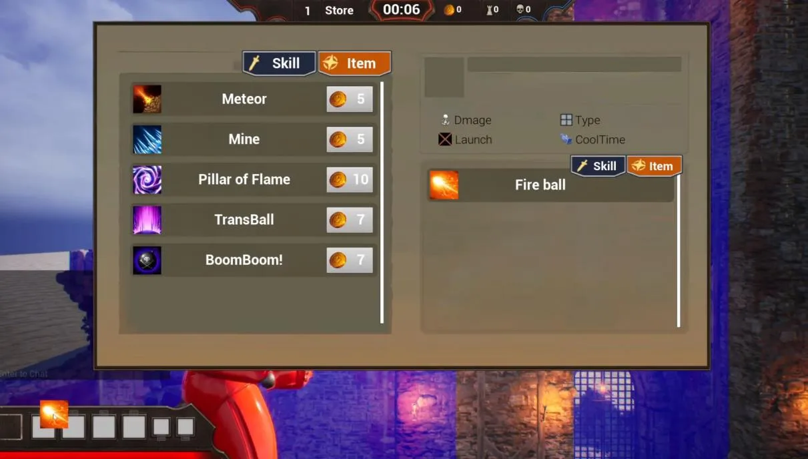
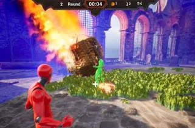

플레이 장면






대표 기능
대기실과 라운드 진행
모두 준비하면 게임이 시작되고, 상점 → 라운드 → 결과를 5번 반복합니다.
상점에서 고르는 스킬과 아이템
라운드 순위로 받은 골드로 스킬과 아이템을 사서 슬롯에 끌어다 놓습니다.
줄어드는 자기장
시간이 지나면 안전 구역이 줄어들고, 밖으로 밀려나면 피해를 입습니다.
채팅 · 킬 로그 · 리더보드
Tab으로 킬/데스와 골드를 보고, Enter로 채팅합니다.
기억에 남는 문제
다른 사람 화면에서는 스킬이 엉뚱한 곳에
스킬을 쓴 본인 화면에서는 맞는 위치에 떨어지는데, 다른 플레이어 화면에서는 원점에 생겼습니다. 위치를 사용자 쪽에서만 계산하고 있었던 것이 원인이라, 서버를 거쳐 모두에게 전달되게 바꿨습니다.
구현 방식과 코드는 기술서에 자세히 정리했습니다.